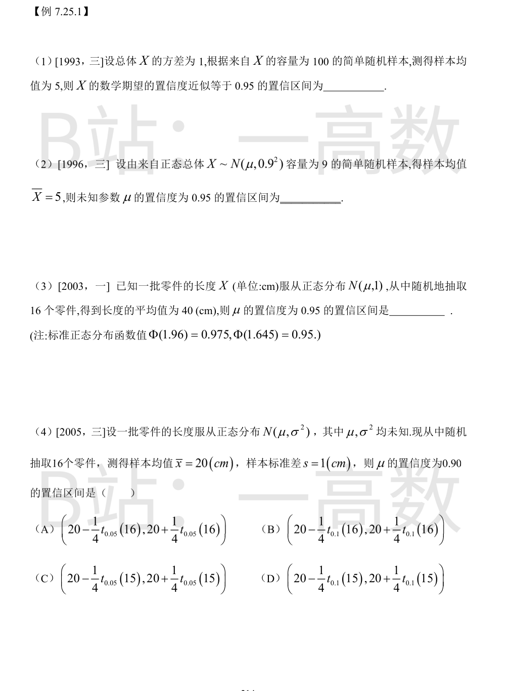
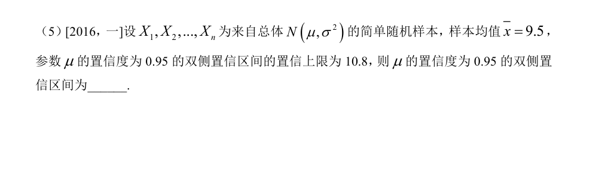
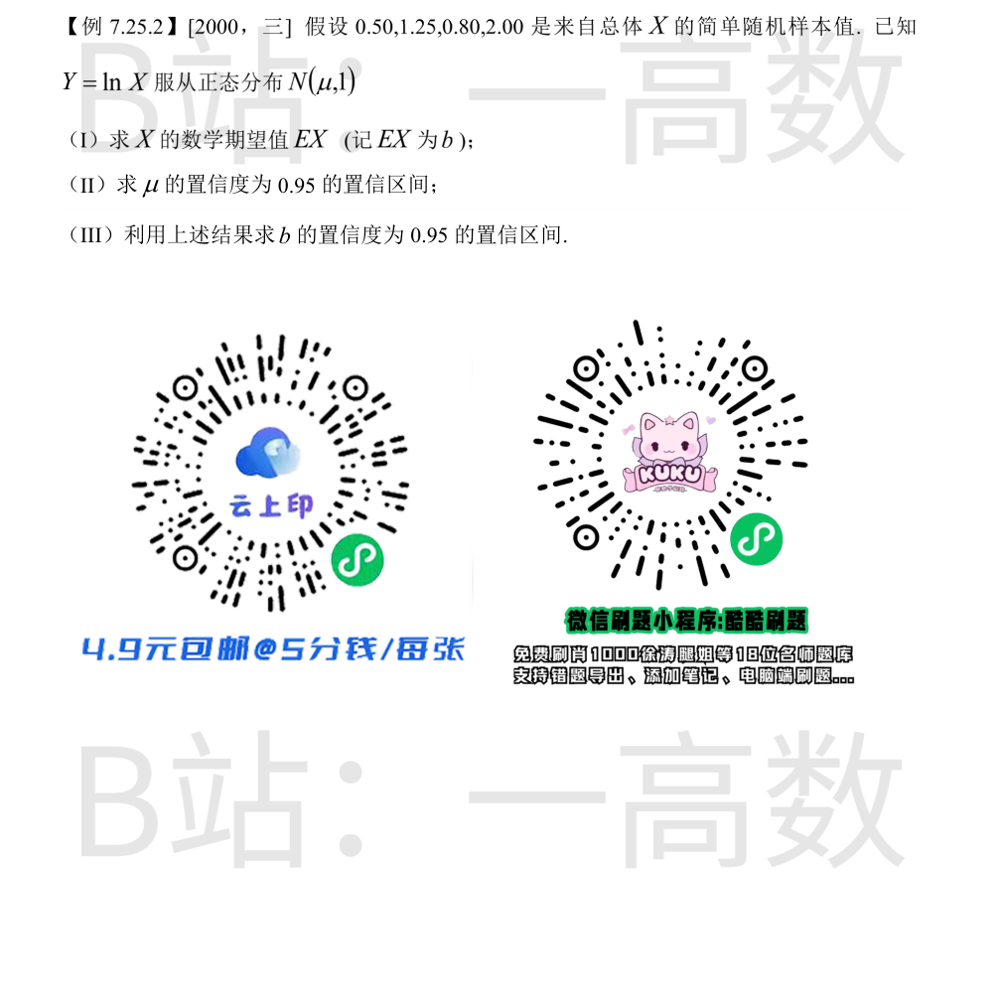

总体分布未知但 $n=100$ 很大，由中心极限定理 $\bar{X}\approx N\left(\mu,\frac{\sigma^2}{n}\right)$，其中 $\sigma^2=1$。置信区间：
$$\left(\bar{x}-z_{0.025}\cdot\frac{\sigma}{\sqrt{n}},\ \bar{x}+z_{0.025}\cdot\frac{\sigma}{\sqrt{n}}\right)=\left(5-1.96\times\frac{1}{10},\ 5+1.96\times\frac{1}{10}\right)=(4.804,\ 5.196)$$
$\sigma=0.9$ 已知，用 $\frac{\bar{X}-\mu}{\sigma/\sqrt{n}}\sim N(0,1)$，$\frac{\sigma}{\sqrt{n}}=\frac{0.9}{3}=0.3$：
$$\left(5-1.96\times 0.3,\ 5+1.96\times 0.3\right)=(4.412,\ 5.588)$$
$\sigma=1$ 已知，$\frac{\sigma}{\sqrt{n}}=\frac{1}{4}$，$z_{0.025}=1.96$：
$$\left(40-1.96\times\frac{1}{4},\ 40+1.96\times\frac{1}{4}\right)=(40-0.49,\ 40+0.49)=(39.51,\ 40.49)$$
$\sigma^2$ 未知，枢轴量 $T=\frac{\bar{X}-\mu}{S/\sqrt{n}}\sim t(n-1)$，置信区间为
$$\left(\bar{x}-\frac{s}{\sqrt{n}}t_{\alpha/2}(n-1),\ \bar{x}+\frac{s}{\sqrt{n}}t_{\alpha/2}(n-1)\right)$$
$1-\alpha=0.90\Rightarrow\alpha=0.10\Rightarrow\alpha/2=0.05$；自由度 $n-1=15$；$\frac{s}{\sqrt{n}}=\frac{1}{4}$。故
$$\left(20-\frac{1}{4}t_{0.05}(15),\ 20+\frac{1}{4}t_{0.05}(15)\right)$$
选 (C)。
正态均值的双侧置信区间形如 $\left(\bar{x}-\delta,\ \bar{x}+\delta\right)$，关于 $\bar{x}=9.5$ 对称，故置信下限 $=2\bar{x}-$ 置信上限 $=2\times 9.5-10.8=8.2$。
所求置信区间为 $(8.2,\ 10.8)$。

(I) $X=e^Y$，利用正态变量指数矩的公式（或配方法）：
$$b=E(X)=E(e^Y)=\int_{-\infty}^{+\infty}e^y\cdot\frac{1}{\sqrt{2\pi}}e^{-\frac{(y-\mu)^2}{2}}dy=e^{\mu+\frac{1}{2}}$$
(II) $\bar{y}=\frac{1}{4}(\ln 0.5+\ln 1.25+\ln 0.8+\ln 2)=\frac{1}{4}\ln(0.5\times 1.25\times 0.8\times 2)=\frac{1}{4}\ln 1=0$。
$\sigma=1$ 已知，$n=4$，$z_{0.025}=1.96$：
$$\left(\bar{y}-z_{0.025}\cdot\frac{1}{\sqrt{4}},\ \bar{y}+z_{0.025}\cdot\frac{1}{\sqrt{4}}\right)=\left(-\frac{1.96}{2},\ \frac{1.96}{2}\right)=(-0.98,\ 0.98)$$
(III) $b=e^{\mu+\frac{1}{2}}$ 关于 $\mu$ 严格单调增加，故把 μ 的置信区间端点直接代入函数即得 b 的置信区间：
$$\left(e^{-0.98+\frac{1}{2}},\ e^{0.98+\frac{1}{2}}\right)=\left(e^{-0.48},\ e^{1.48}\right)$$